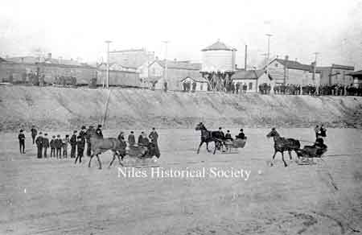

PO1.1414
Above the banks of the Mahoning
River run the Pennsylvania Railroad tracks. The water tower is
iced due to the cold wintry weather. The nearest wooden buildings
are the Manhattan Hotel and Gilmore's Restaurant at the corner
of Main and Water Streets. |
Horse
Racing on the Mahoning River.
Horse racing on the river was
a royal sport during the early years of the 19th century. It was
a form of entertainment, social activities and recreation, for
there were no television, radios and all the things we have today
to entertain us.
Proficient drivers studied the winter conditions of the Mahoning
River and were pretty good judges as to when the ice would be
in perfect condition for racing; providing, of course, that the
temperature remained the same or grew colder. After the ice reached
a 2” thickness, members of the area sportsmen club, sent
invitations out to the river racing enthusiasts of the surrounding
areas.
The gentlemen often made a trial run over the course between Youngstown
and Warren the day before the race, testing the smoothness of
the surface. High spirited sportsman would arrive in Youngstown
in gay colored sleighs or cutters to which were hitched with high-stepping
horses. The horses, well-groomed and wearing fancy harnesses,
were really something to see. The sleighs, with their glistening
runners, were equipped with warm woolen or buffalo robes to keep
their drivers and riders warm.
|
In
Youngstown, the day of the big event, the two horse sleighs and
cutters would line up abreast and at the judge’s signal
they were off on a wild, dashing, fifteen-mile race to their Warren
destination.
At each settlement along the river,
everyone gathered on the river bank to wait for or the high-spirited
horses to come into sight, flash by, and quickly disappear in
the direction of the finish line. It was customary that either
the losers, or the men in the last sleigh to reach the destination,
were the paying hosts and a sumptuous dinner was enjoyed by all,
winners and losers.
During those early days, prominent pioneers such as Judge
George Tod, Judge William Rayen, John E. Woodbridge,
and Colonel James Hillman of Youngstown, General
Elijiah Wadsworth and Comfort Mygatt of Canfield,
Simon Perkins and Calvin Pease of Warren, and
Robert Montgomery and David Clendennen of Coitsville,
were members of the sportsmen’s club.
There’s a legend about one particular river race in which
those notable pioneers participated, and which had an interesting
end. As the starting time drew near for this particular race,
Judge Rayen shouted, “Get your horses on the starting line,,,
Remember, The last six contestants to cross the finish line buy
dinner for all twelve gentlemen…Are you ready?,, Then…
let’s ….Go!!!!
For days before this particular race, most of the contestants
had driven and raced over the course, testing the smoothness of
the ice. But one man’s business reportedly kept him so busy
that he didn’t have time for a ‘trial’ run.
But what the other sportsmen didn’t know was that Henry
Talbot did his ‘trial’ running in the middle
of the night, at which time he placed a flock of turkeys in a
very convenient area along the course.
When the participants had covered
about three-quarters of the course, turkeys came flying and sliding
across the ice in front of their horses; consequently, it took
the drivers at least five minutes to get their horses under control
and headed in the right direction.
Dr. Taylor crossed the finish line, excited that he had arrived
first; but, he soon learned that Henry Talbot had arrived five
minutes ahead of him. Colonel Hillman of Youngstown arrived next
and he was very upset to learn that he was the third, not the
second one to cross the finish line. Then the winner was asked
where he had been when the turkeys caused so much confusion on
the river, Talbot answered, “Why I followed the course on
the other side of the river; besides my horse is stone deaf so
the commotion didn’t upset him.”
Over the ensuing years the river has changed. Industrial development
along the river banks and use of the river water has become sizeable
enough that the water is too warm to freeze. The United States
Corps of Engineers is supposed to be dredging the Mahoning River
to clean it up, however we have not seen much evidence of this.
Maybe some day our great grandchildren can once again enjoy the
Mahoning river as residents used to at the turn of the century
and now you know the rest of the story… |


{kind=link}